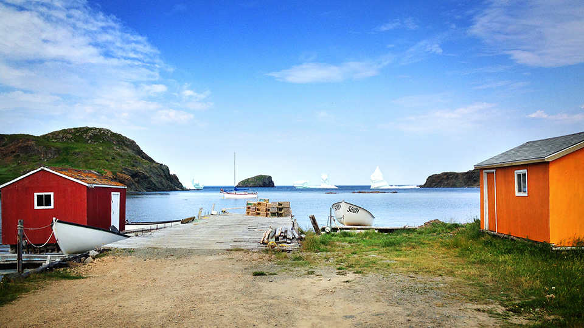
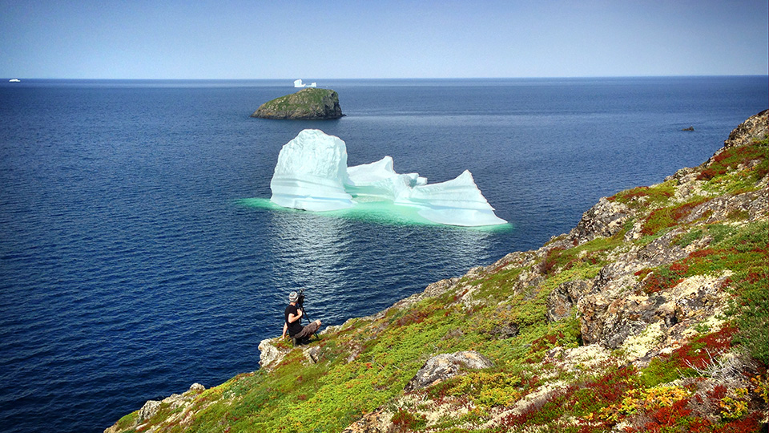

Terre-Neuve
(2015)
Synopsis
Là où jaillissent les tous premiers rayons de soleil en Amérique du Nord se trouve une terre, une île, une histoire très ancienne, un relief unique, une culture insulaire et une chaleur humaine inestimables. Terre-Neuve. Terre riche de paysages variés aux beautés incroyables, de créations musicales et culinaires surprenantes, de traditions et de valeurs unifiant tout un peuple. Nous vous proposons de découvrir l’ensemble de ce territoire majestueux en nous suivant dans les aventures d’un road trip où le beau temps est au rendez-vous !
Détails du projet
- Rôle : Réalisation, Caméra, Montage
- Année : 2015
- Durée : 91 minutes
- Diffuseur : Les Aventuriers Voyageurs